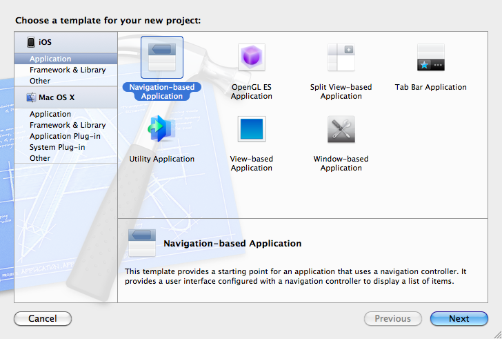
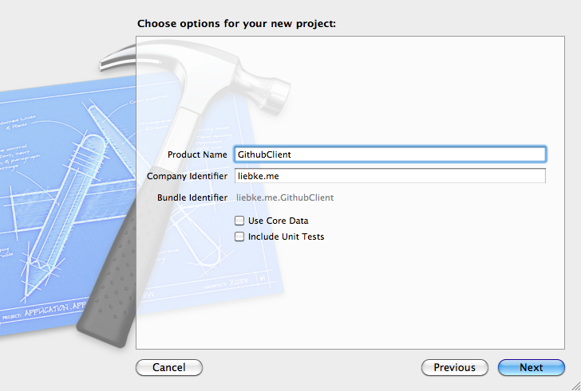
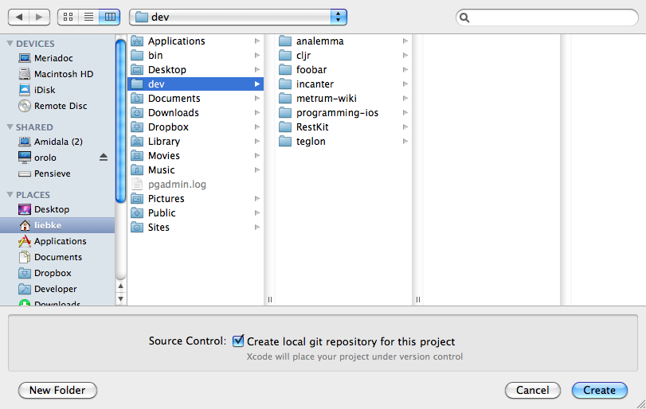
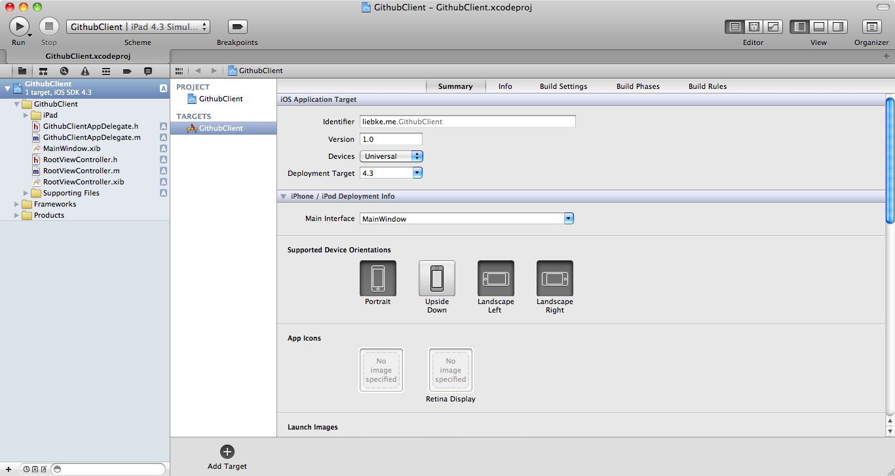
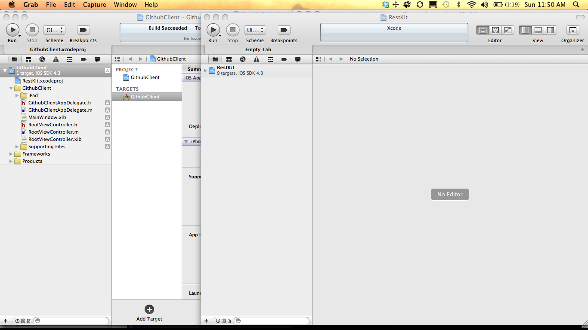
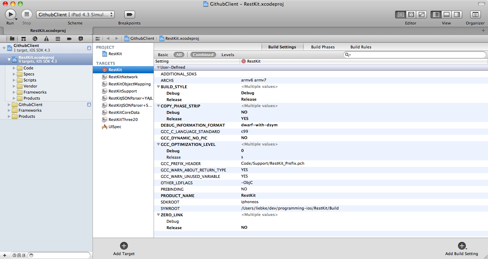
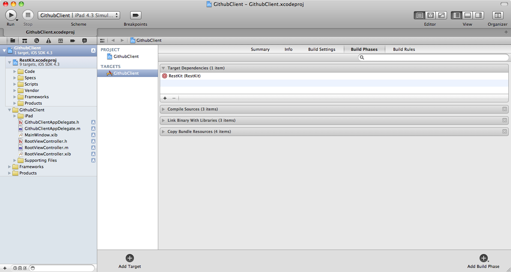
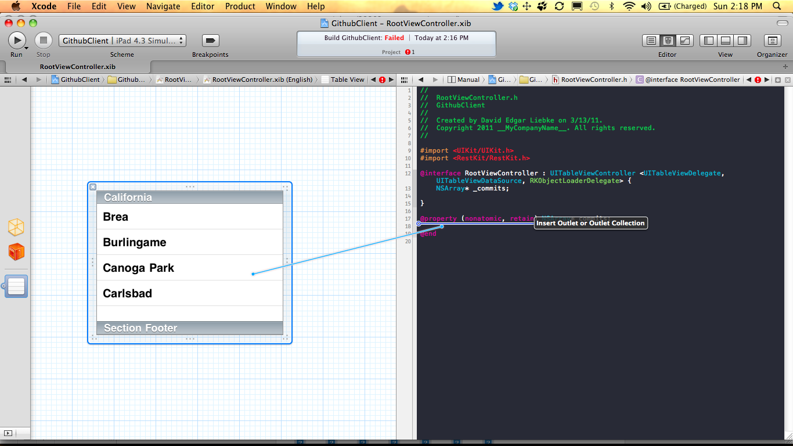
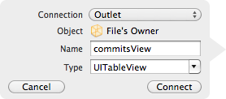
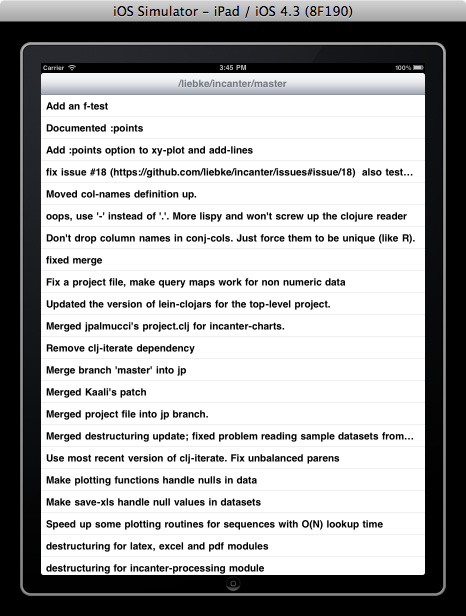

Building a Simple Github iOS Client with RestKit Pt. 1
This tutorial will demonstrate how to use Xcode 4 to build a very simple Github iOS client that retrieves commit messages for a given project using an open source Objective-C library called RestKit.
Later posts will focus on improving the functionality and interface of the client, as well as using RestKit's Core Data integration to provide local data persistence.
The source code for the project is available on Github, and additional iOS resources are available at http://liebke.me/ios-resources/, including guides to getting started with iOS and Objective-C development.
RestKit
RestKit is an open source Objective-C framework for iOS that simplifies interacting with RESTful web services. RestKit has been written by Two Toasters, and they have written an excellent tutorial for getting started with it. They are also about to publish an advanced tutorial, a draft of which is available in their Github repo.
Setting Up RestKit with Xcode 4
There are instructions on Github for installing RestKit as a project dependency using either version 3 or 4 of Xcode; I will start by providing a detailed walk through of the installation instructions for Xcode 4.
So let's get started by creating a new project using the Navigation-based Application template,
{kind=link}
which we'll call GithubClient. We won't include Core Data or unit tests (so make sure those boxes are unselected),
{kind=link}
but we will want to create a local git repository for the project, so select the checkbox at the bottom of the save-as dialog.
{kind=link}
Once the project is open, I'm going to set the device to Universal and the scheme to iPad 4.3 simulator.
{kind=link}
Next we want to create a RestKit git submodule in our project directory, so open up a terminal window, cd to the project directory and enter:
git submodule add git://github.com/twotoasters/RestKit.git RestKitNext open the RestKit project in Xcode, and drag the RestKit.xcodeproj file from the RestKit project window and drop it on to the GithubClient.xcodeproj file. Unfortunately, Xcode will only make a project available in one window at a time, so we can't access the RestKit project files from our project until we close the other windows containing RestKit, and then re-open our project.
{kind=link}
After re-opening our project, you should be able to toggle open the nested RestKit project and see its files.
{kind=link}
Next we want to add the RestKit headers to our header search path, so select the GithubClient project in the navigation pane, then select the project file in the middle pane, and select the Build Settings tab in the main pane; then scroll down to the Search Paths section, and enter the following text (quotes and all) as the value for both debug and release in the Header Search Path section:
"$(SOURCE_ROOT)/RestKit/Build"{kind=link}
Now set the following text as the value for debug and release in the Library Search Path section:
"$(SOURCE_ROOT)/RestKit/Build/$(BUILD_STYLE)-$(PLATFORM_NAME)"{kind=link}
Now scroll up to the Linking section of the build settings, and enter the following text for debug and release in the Other Linker Flags section:
-ObjC -all_load{kind=link}
Now we want to add the RestKit target as a target dependency, so select the GithubClient target in the middle pane, and select the Build Phases tab from the main pane, open the Target Dependencies section, and click the + button to add the RestKit target.
{kind=link}
Now we want to add the following libraries to the Link Binary with Libraries section of the Build Phases tab:
- libRestKitCoreData.a
- libRestKitJSONParserYAJL.a
- libRestKitNetwork.a
- libRestKitObjectMapping.a
- libRestKitSupport.a
- CFNetwork.framework
- CoreData.framework
- MobileCoreServices.framework
- SystemConfiguration.framework
{kind=link}
Finally, let's make sure we configured everything correctly by importing the following RestKit headers in our RootViewController.h file and the building the project with the Cmd-b keyboard short cut, or by hitting the run button at the top:
#import <RestKit/RestKit.h>
#import <RestKit/CoreData/CoreData.h>
{kind=link}
If everything built, you're good to go.
Github API
For this simple client we'll use Github's RESTful API to retrieve the commit messages for a given project, which returns JSON formatted as follows.
http://github.com/api/v2/json/commits/list/mojombo/grit/master
{
"commits": [
{
"parents": [
{
"id": "e3be659a93ce0de359dd3e5c3b3b42ab53029065"
}
],
"author": {
"name": "Ryan Tomayko",
"login": "rtomayko",
"email": "rtomayko@gmail.com"
},
"url": "/mojombo/grit/commit/6b7dff52aad33df4bfc0c0eaa88922fe1d1cd43b",
"id": "6b7dff52aad33df4bfc0c0eaa88922fe1d1cd43b",
"committed_date": "2010-12-09T13:50:17-08:00",
"authored_date": "2010-12-09T13:50:17-08:00",
"message": "update History.txt with bug fix merges",
"tree": "a6a09ebb4ca4b1461a0ce9ee1a5b2aefe0045d5f",
"committer": {
"name": "Ryan Tomayko",
"login": "rtomayko",
"email": "rtomayko@gmail.com"
}
}
]
}
The result consists of a single JSON object containing a single field, called commits, which is an array of objects that include fields like author, committer, message, url; author and committer are objects representing Github users, and include fields for name, login, and email.
Creating RKObjects
RKObject is a RestKit class that can be mapped to JSON objects. We will create three Objective-C classes, GHCommitSet, GHCommit, and GHUser that we will map to the JSON objects returned from Github.
GHUser
First lets create a class called GHUser that will represent the author and committer fields in the commit JSON object. First create an new Object-C class (File->New->New File->Object-C Class) as a subclass of RKObject, and then edit the GHUser.h file to add the following properties: name, login, and email.
GHUser.h
#import <Foundation/Foundation.h>
#import <RestKit/RestKit.h>
@interface GHUser : RKObject {
NSString* _name;
NSString* _login;
NSString* _email;
}
@property (nonatomic, retain) NSString* name;
@property (nonatomic, retain) NSString* login;
@property (nonatomic, retain) NSString* email;
@end
Next implement GHUser.m, which will look like any other basic Objective-C class, using @synthesize to implement its properties, but there will be an additional method, elementToPropertyMappings, which returns an NSDictionary that maps attributes in the JSON object to properties in the Objective-C class.
GHUser.m
#import "GHUser.h"
@implementation GHUser
@synthesize name = _name;
@synthesize login = _login;
@synthesize email = _email;
+ (NSDictionary*)elementToPropertyMappings {
return [NSDictionary dictionaryWithKeysAndObjects:
@"name", @"name",
@"login", @"login",
@"email", @"email",
nil];
}
@end
GHCommit
Now let's create a class called GHCommit that will represent Github's commit JSON object, again as a subclass RKObject, and then add the following properties to the GHCommit.h file: message, url, author, and committer.
GHCommit.h
#import <Foundation/Foundation.h>
#import <RestKit/RestKit.h>
#import "GHUser.h"
@interface GHCommit : RKObject {
NSString* _message;
NSString* _url;
GHUser* _author;
GHUser* _committer;
}
@property (nonatomic, retain) NSString* message;
@property (nonatomic, retain) NSString* url;
@property (nonatomic, retain) GHUser* author;
@property (nonatomic, retain) GHUser* committer;
@end
Next edit GHCommit.m, which will have an elementToPropertyMappings method, just like GHUser, where we'll map the message and url properties to their respective JSON fields. GHCommit will include one more method, called elementToRelationshipMappings that will map the author and committer JSON fields to their respective class properties, which are both GHUser objects.
GHCommit.m
#import "GHCommit.h"
@implementation GHCommit
@synthesize message = _message;
@synthesize url = _url;
@synthesize author = _author;
@synthesize committer = _committer;
+ (NSDictionary*) elementToPropertyMappings {
return [NSDictionary dictionaryWithKeysAndObjects:
@"message", @"message",
@"url", @"url",
nil];
}
+ (NSDictionary*) elementToRelationshipMappings {
return [NSDictionary dictionaryWithKeysAndObjects:
@"author", @"author",
@"committer", @"committer",
nil];
}
@end
GHCommitSet
Finally, the last data class we need is GHCommitSet, which will only have a single property, called commits, the value of which will be an NSArray of GHCommit objects.
GHCommitSet.h
#import <Foundation/Foundation.h>
#import <RestKit/RestKit.h>
@interface GHCommitSet : RKObject {
NSArray* _commits;
}
@property (nonatomic, retain) NSArray* commits;
@end
Like GHCommit, we'll need both the elementToPropertyMappings and elementToRelationshipMappings methods, but since there are no simple property types in the class, the elementToPropertyMappings method will return an empty NSDictionary.
GHCommitSet.m
#import "GHCommitSet.h"
#import "GHCommit.h"
@implementation GHCommitSet
@synthesize commits = _commits;
+ (NSDictionary*) elementToPropertyMappings {
return [NSDictionary dictionaryWithKeysAndObjects: nil];
}
+ (NSDictionary*) elementToRelationshipMappings {
return [NSDictionary dictionaryWithKeysAndObjects:
@"commits", @"commits", nil];
}
@end
Notice that the commits property is an NSArray, not a GHCommit, so we'll need to tell the RKObjectMapper to map commits to GHCommit.
Deserializing JSON Objects
GithubClientAppDelegate.m
Now we need to initialize RestKit's RKObjectManager and map the commits element to the GHCommit class, both of which we'll do in the application:didFinishLaunchingWithOptions: method of the GithubClientAppDelegate.m class.
GithubClientAppDelegate.m
- (BOOL)application:(UIApplication *)application
didFinishLaunchingWithOptions:(NSDictionary *)launchOptions
{
// Initialize RestKit
NSString* baseUrl = @"http://github.com/api/v2/json/commits/list";
RKObjectManager* objectManager = [RKObjectManager objectManagerWithBaseURL:baseUrl];
// Map JSON elements to Obj-C classes
RKObjectMapper* mapper = objectManager.mapper;
[mapper registerClass:[GHCommit class] forElementNamed:@"commits"];
// ... rest of generated method definition
}
Viewing Commit Messages in a UITableView
Now that the JSON to Obj-C mappings are taken care of, let's display the commit messages for a project on github, in this case my Incanter project.
RootViewController.xib
First, let's add an IBOutlet called commitsView to the RootViewController.h file and link it to the UITableView in the RootViewController.xib file.
We can do both steps at once with Interface Builder, so open the xib file and select the Assistant editor view, making sure the RootViewController.h file is open in the second pane. Now just Ctrl-drag from UITableView widget to the header file (just above the @end keyword),
RootViewController.xib {kind=link}
and name it commitsView when prompted. That will create the appropriate IBOutlet property in the header, add the @synthesize statement to RootViewController.m (as well as add a call to release in its dealloc method), and link the commitsView property to the UITable view in the xib file.
{kind=link}
RootViewController.h
Now we want to indicate that the RootViewController class implements the following protocols: TableViewDelegate, UITableViewDataSource, RKObjectLoaderDelegate. We also want to add an NSArray property, called commits, to the RootViewController that we will use to store the GHCommit objects retrieved from Github.
RootViewController.h
#import <UIKit/UIKit.h>
#import <RestKit/RestKit.h>
@interface RootViewController : UITableViewController <UITableViewDelegate,
UITableViewDataSource,
RKObjectLoaderDelegate>
{
NSArray* _commits;
UITableView *_commitsView;
}
@property (nonatomic, retain) NSArray* commits;
@property (nonatomic, retain) IBOutlet UITableView *commitsView;
@end
RootViewController.m
In addition to adding the @synthesize statement and a call to release in dealloc for the commits property, we'll want to add code to the viewDidLoad method that will retrieve the commit messages for the Incanter project from Github.
The call is asynchronous, so we'll need to pass a RKObjectLoaderDelegate object to handle the response, which in this case will be self because RootViewController implements the RKObjectLoaderDelegate protocol, at least it will once we implement the necessary functions.
RootViewController.m
#import "GHCommitSet.h"
@synthesize commits = _commits;
- (void)viewDidLoad
{
[super viewDidLoad];
NSString* repo = @"/liebke/incanter/master";
self.title = repo;
// Load the object model via RestKit
RKObjectManager* objectManager = [RKObjectManager sharedManager];
[objectManager loadObjectsAtResourcePath:repo
objectClass:[GHCommitSet class]
delegate:self];
- (void)dealloc
{
[_commitsView release];
[_commits release];
[super dealloc];
}
}
RootViewController.m: RKObjectLoaderDelegate methods
Alright, now we need to implement the objectLoader:didLoadObjects: and objectLoader:didFailWithError: methods of the RKObjectLoaderDelegate protocol. The first method will take an RKObjectLoader and an NSArray containing a single instance of GHCommitSet. We will set the RootViewController's commits instance variable to the value of the GHCommitSet's commits property.
RootViewController.m
- (void)objectLoader:(RKObjectLoader*)objectLoader didLoadObjects:(NSArray*)objects
{
[_commits release];
_commits = [[[objects objectAtIndex:0] commits] retain];
[self.commitsView reloadData];
}
For the objectLoader:didFailWithError: method, we'll show a UIAlertView with a description of the error.
RootViewController.m
- (void)objectLoader:(RKObjectLoader*)objectLoader didFailWithError:(NSError*)error
{
UIAlertView* alert = [[[UIAlertView alloc]
initWithTitle:@"Error"
message:[error localizedDescription]
delegate:nil
cancelButtonTitle:@"OK"
otherButtonTitles:nil] autorelease];
[alert show];
}
RootViewController.m: UITableViewDataSource methods
Now we need to implement the methods for the UITableViewDataSource protocol. First we'll implement the numberOfSectionsInTableView: method, and just have it always return 1.
RootViewController.m
- (NSInteger)numberOfSectionsInTableView:(UITableView *)tableView
{
return 1;
}
Next we'll implement the tableView:numberOfRowsInSection: method, which will just return the count of the commits property.
RootViewController.m
- (NSInteger)tableView:(UITableView *)tableView
numberOfRowsInSection:(NSInteger)section
{
return [self.commits count];
}
Finally, we need to implement the tableView:cellForRowAtIndexPath: method. Most of the implementation is included in the template we used to create the project, we just need to add the line that sets the value of the cell's textLabel to the value of the message from the GHCommit object at the indexPath.row passed into the method.
RootViewController.m
// Customize the appearance of table view cells.
- (UITableViewCell *)tableView:(UITableView *)tableView
cellForRowAtIndexPath:(NSIndexPath *)indexPath
{
static NSString *CellIdentifier = @"Cell";
UITableViewCell *cell = [tableView dequeueReusableCellWithIdentifier:CellIdentifier];
if (cell == nil) {
cell = [[[UITableViewCell alloc]
initWithStyle:UITableViewCellStyleDefault
reuseIdentifier:CellIdentifier] autorelease];
}
// Configure the cell.
cell.textLabel.text = [[self.commits objectAtIndex:indexPath.row] message];
return cell;
}
That's it, we can run the code and an iPad (or iPhone) simulator will start with a basic list view of the most recent commit messages from the Incanter project on Github.
{kind=link}
Future posts will continue to build on this example, adding the ability to browse different projects, see more details on individual commits, and use RestKit's Core Data integration to persist the commit messages to the device.